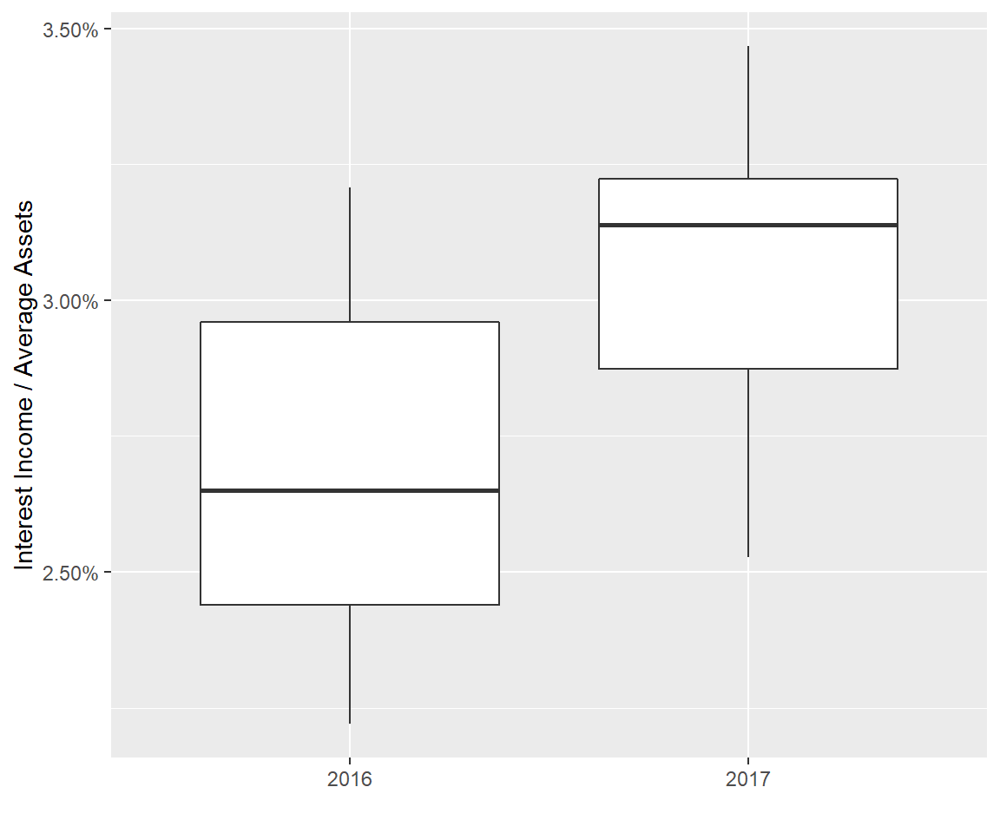

FR Y-9c Demonstration
Rob Carnell
2018-11-25
fry9c_demo.RmdFR Y-9c
From the U.S. Federal Reserve website, the description and purpose of the FR Y-9c is:
Description
“This report collects basic financial data from a domestic bank holding company (BHC), a savings and loan holding company (SLHC), a U.S intermediate holding company (IHC) and a securities holding company (SHC) on a consolidated basis in the form of a balance sheet, an income statement, and detailed supporting schedules, including a schedule of off balance-sheet items.” (1)
Purpose
“The information is used to assess and monitor the financial condition of holding company organizations, which may include parent, bank, and nonbank entities. The FR Y-9C is a primary analytical tool used to monitor financial institutions between on-site inspections. The form contains more schedules than any of the FR Y-9 series of reports and is the most widely requested and reviewed report at the holding company level.” (1)
Dowloading Data
The first step is to download the FR Y-9c data from the Federal Reserve.
fry9c_data_list <- list(get_fry9c_data(2017, 4, verbose = FALSE),
get_fry9c_data(2016, 4, verbose = FALSE))
bank_meta_data <- get_bank_meta_data()Create a fry9c Object and Add Data
Create objects
my_fry9c_group <- Fry9c_group(years = c(2017, 2016),
quarters = c(4, 4))Select banks
Selecting a subset of banks is not required, but allows for a more focused inspection.
# These names must match those in the bank_meta_data
# For example, search for PNC
bank_meta_data[grep("PNC", bank_meta_data$Name),]
#> X ID_RSSID Entity_Type
#> 14 14381 1069778 FHD
#> 15 14383 1069778 BHC
#> 16 14384 1069778 FHD
#> Name
#> 14 PNC BANK CORP. PITTSBURGH PA 19690430 20000313 Cleveland
#> 15 PNC FINANCIAL CORP. PITTSBURGH PA 19690430 19930207 Cleveland
#> 16 PNC FINANCIAL SERVICES GROUP, INC., THE PITTSBURGH PA 19690430 Cleveland
targets <- c("PNC BANK CORP",
"U.S. BANCORP")
# It is also helpfult to have shorter names like stock tickers
targets_short <- c("PNC", "USB")
assertthat::assert_that(length(targets) == length(targets_short))
#> [1] TRUE
# Get the target ids
target_ids <- get_bank_ids(targets, bank_meta_data)Initialize Objects
# add the schedule and component definitions
my_fry9c_group$parse_fry9c(
system.file(file.path("extdata", c("FR_Y-9C20171231.xml", "FR_Y-9C20161231.xml")),
package = "fry9c"))
# create a dataset with only the target banks
fry9c_data_list_small <- lapply(fry9c_data_list, function(z) {
z[match(target_ids, z$RSSD9001),]})
# initialize the data
my_fry9c_group$initializeData(fry9c_data_list_small, targets_short)
# common size the Income Statements (HI and HI_Memo)
my_fry9c_group$commonSize("HC-K", "BHCK3368", "HI")
my_fry9c_group$commonSize("HC-K", "BHCK3368", "HI_Memo")Plotting
Setting up the color palette
pal <- brewer.pal(3, "Set1")
stock_cols <- c("PNC" = pal[1],
"USB" = pal[2])
assertthat::assert_that(length(targets) == length(stock_cols))
#> [1] TRUE
stock_sizes <- c("PNC" = 1,
"USB" = 2)
assertthat::assert_that(length(targets) == length(stock_sizes))
#> [1] TRUEPlotting a time series
avg_asset_data <- my_fry9c_group$get_plot_data("HC-K", "BHCK3368")
ggplot(avg_asset_data, aes(x = x, y = value, group = bank, col = bank)) +
geom_point(aes(size = bank)) +
geom_line() +
scale_y_log10(name = "Total Average Assets (000s) (log scale)", labels = scales::dollar) +
xlab("") +
scale_color_manual(values = stock_cols) +
scale_size_manual(values = stock_sizes) +
theme(legend.title = element_blank(),
axis.text.x = element_text(angle = 90, hjust = 1, vjust = 0.5))
interest_income_data <- my_fry9c_group$get_plot_data("HI", "BHCK4107")
ggplot(interest_income_data, aes(x = x, y = common_value, group = bank, col = bank)) +
geom_point(aes(size = bank)) +
geom_line() +
scale_y_continuous(name = "Interest Income / Average Assets", labels = scales::percent) +
xlab("Quarter") +
scale_color_manual(values = stock_cols) +
scale_size_manual(values = stock_sizes) +
theme(legend.title = element_blank())Plotting the Distribution of Bank Performance
targets <- substring(bank_meta_data$Name[bank_meta_data$Entity_Type == "FHD"], 1, 20)
target_ids <- get_bank_ids(targets, bank_meta_data)
fry9c_data_list_FHD <- lapply(fry9c_data_list, function(z) {
z[match(target_ids, z$RSSD9001),]})
my_fry9c_group$initializeData(fry9c_data_list_FHD, targets)
my_fry9c_group$commonSize("HC-K", "BHCK3368", "HI")
my_fry9c_group$commonSize("HC-K", "BHCK3368", "HI_Memo")
avg_asset_data <- my_fry9c_group$get_plot_data("HC-K", "BHCK3368")
ggplot(avg_asset_data, aes(x=value, group=year)) +
geom_histogram(bins=20) +
facet_grid(.~year) +
scale_x_log10(name="Average Assets (000s) (log scale)", label = scales::dollar) +
theme(axis.text.x = element_text(angle = 90, hjust = 1, vjust = 0.5)) +
ylab("Count (Example Data)")
interest_income_data <- my_fry9c_group$get_plot_data("HI", "BHCK4107")
interest_income_data$year <- factor(interest_income_data$year)
ggplot(interest_income_data, aes(x = year, y = common_value, group = year)) +
geom_boxplot() +
scale_y_continuous(name="Interest Income / Average Assets", label = scales::percent) +
xlab("")
Note
Care must be taken to ensure that a bank is not included in the data twice. See J.P. Morgan below.
print(subset(interest_income_data,
select=c("year","quarter","bank","value","common_value")))
#> year quarter bank value common_value
#> 1 2017 4 BB&T CORPORATION 7374000 0.03308136
#> 2 2017 4 CHASE MANHATTAN CORP 64645000 0.02526655
#> 3 2017 4 FIFTH THIRD BANCORP 4537348 0.03222549
#> 4 2017 4 HUNTINGTON BANCSHARE 3460753 0.03376373
#> 5 2017 4 J.P. MORGAN CHASE & 64645000 0.02526655
#> 6 2017 4 JPMORGAN CHASE & CO. 64645000 0.02526655
#> 7 2017 4 KEYCORP 4389437 0.03206040
#> 8 2017 4 M&T BANK CORPORATION 4167795 0.03467056
#> 9 2017 4 PNC BANK CORP. 10812529 0.02872966
#> 10 2017 4 PNC FINANCIAL SERVIC 10812529 0.02872966
#> 11 2017 4 REGIONS FINANCIAL CO 3893631 0.03139006
#> 12 2017 4 SUNTRUST BANKS, INC. 6418531 0.03118193
#> 13 2017 4 U.S. BANCORP 14385000 0.03151053
#> 14 2016 4 BB&T CORPORATION 7066040 0.03207267
#> 15 2016 4 CHASE MANHATTAN CORP 56157000 0.02220254
#> 16 2016 4 FIFTH THIRD BANCORP 4244363 0.03004054
#> 17 2016 4 HUNTINGTON BANCSHARE 2661266 0.02650531
#> 18 2016 4 J.P. MORGAN CHASE & 56157000 0.02220254
#> 19 2016 4 JPMORGAN CHASE & CO. 56157000 0.02220254
#> 20 2016 4 KEYCORP 3318759 0.02439433
#> 21 2016 4 M&T BANK CORPORATION 3895871 0.03101468
#> 22 2016 4 PNC BANK CORP. 9652650 0.02639660
#> 23 2016 4 PNC FINANCIAL SERVIC 9652650 0.02639660
#> 24 2016 4 REGIONS FINANCIAL CO 3689637 0.02954546
#> 25 2016 4 SUNTRUST BANKS, INC. 5793310 0.02855675
#> 26 2016 4 U.S. BANCORP 13167000 0.02959661